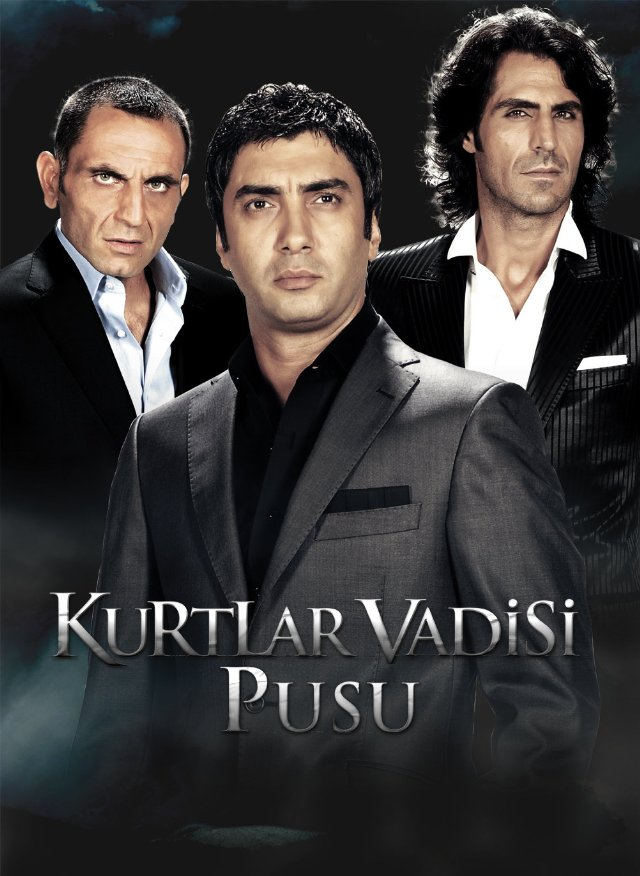
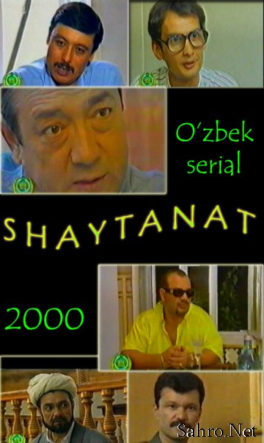
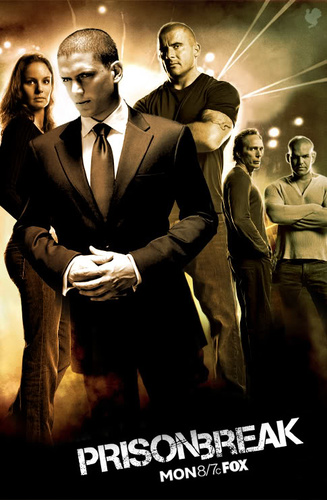
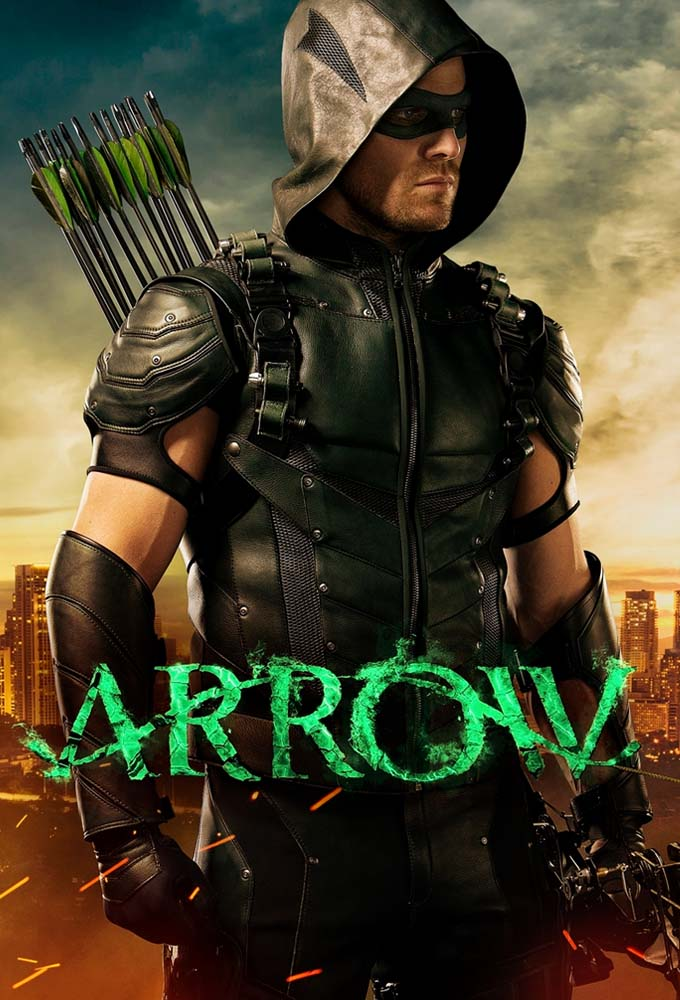

ACTION | DETECTIVE | SCI-FI | Thriller
4 JUNE 2003 (TURKISH)
Valley of the Wolves, the legendary action drama, centers around Polat Alemdar and follows his journey to serve his country by trying to uncover the truth and defeating the secret enemies aka the controllers of the global power.

CRIMINAL | REALISM | SCI-FI | Thriller
5 JANUARY 1998 (UZBEKISTAN)
Shaytanat – Tohir Malik qalamiga mansub “Shaytanat” asari asosida 1998-yilda suratga olingan kriminal detektiv teleserial[1]. Serialda 1980-yillarning oxiri – 1990-yillarning boshlaridagi Oʻzbekistondagi jinoiy toʻdalar haqida soʻz boradi.Mashhur qoʻshiqchi Elchin oʻz xotinini qasddan oʻldirganlikda ayblanib, koʻp yillarga qamalib ketadi. Gap shundaki, u gʻirt mast holda qimor oʻynab, hamma narsasini yutqazib qoʻyadi. Yutib chiqish umidida xotinini ham qimorga tikib yuboradi. Oxir-oqibat yutqazib qoʻygan Elchin nima boʻlayotganini anglamay, mastlik taʻsirida uxlab qoladi. Oʻziga kelgach xotinini oʻlik holda topadi. Bu qotillik mashhur jinoiy toʻda yetakchisi Asadbekning odamlari tomonidan sodir etilganini tushunib yetadi. Endilikda Elchinnning maqsadi – Asadbekdan qasos olishdan iborat.

RUN AWAY FROM PRISON | CRIMINAL | REALISM | SCI-FI | Thriller
24 MARCH 2010 (Vancouver,CANADA)
The original Prison Break series ran from 2004 to 2009 on FOX, so it's been a while since last time we watched the brothers making their way out to freedom. This new bunch of episodes is considered to be the fifth season of the show, although it has also been called Prison Break: Sequel, Resurrection, or even Revival.

ARTHOUSE | HORROR | CLASSIC FILM | SCI-FI | Thriller
4 DECEMBER 2009 (UNITED KINGDOM)
Arrow Films is one of the UK's leading independent distributors of world cinema, arthouse, horror and classic films. For over 15 years Arrow Films has pioneered the best directors from Europe and around the world, such as Denys Arcand, Tinto Brass, Luis Buñuel, Claude Chabrol, Jules Dassin, Vittorio De Sica, Abel Ferrara, Lasse Hallström, Eric Rohmer, Roberto Rossellini, Giuseppe Tornatore, Andrzej Wajda, and Wim Wenders. Plot Summary | Plot Synopsis
Click here to find other data about movie. Social Network
Click here Return Home